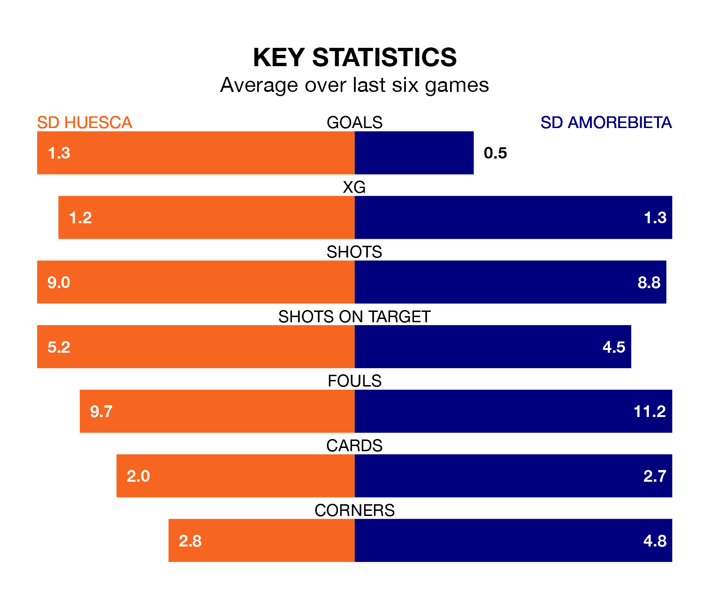

SD Amorebieta come to the Estadio El Alcoraz to play SD Huesca on late Sunday in terrible form, having collected just two points from their last six games.
The visitors have drawn two and lost four of their last six fixtures, while Huesca have two wins and two draws.
Amorebieta are bottom of the table after 25 games, of which they have won three and drawn seven, earning 16 points.
Huesca are six places ahead of the visitors in 16th, with six wins and nine draws putting them on 27 points.
In Álvaro Fernández, the home side can rely on one of the league's safest pair of hands. He has kept nine clean sheets in his 25 appearances this season in the Segunda División.
In Amorebieta's net, Pablo Cuñat Campos has four clean sheets in 21 games. He has conceded a goal every 76 minutes, 50% more often than the 113 minutes between goals for Fernández Llorente.
In the last three years, Huesca and Amorebieta have played each other on three occasions. They won one each, and they drew once.
Their last meeting was on November 5, when Huesca won 1-0 away.
With 19 goals in 25 games so far this season, Amorebieta are the league's lowest scorers with 0.8 goals per game. And they are conceding more than average, letting in 36 goals at a rate of 1.4 per game.
Huesca are also below average scorers, with 0.8 goals per game, compared to a league average of 1.2. They have conceded 0.9 goals per game.
Huesca's last match was on February 3, a 1-0 win against AD Alcorcón, with Samuel Obeng Gyabaa getting the goal for Huesca.
Amorebieta lost 1-0 against Racing Santander last time out, on February 4.
Updated: 10:01 (UTC), 06/02/24